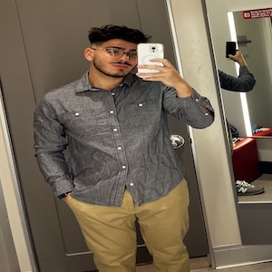

Email: adriansalinas@lewisu.edu
Discord: Stay_Calm#1262
Hello! My name is Adrian Salinas. I come from a household of five, which includes my parents and two older siblings. I was born and raised on the South Side of Chicago and moved out on my own at the age of 20 to Crest Hill. I have a close relationship with my parents and still stay in regular contact with them. My sister is the only other member of my family who has completed a college degree. I am currently majoring in Computer Science at Lewis University.
I enjoy activities that allow me to build skill sets and stay active:
Learn more about a trading strategy that I have been doing: AIinvest.com
Since I work at a popular bar in Lockport frequented by Lewis students, I see many of them regularly.